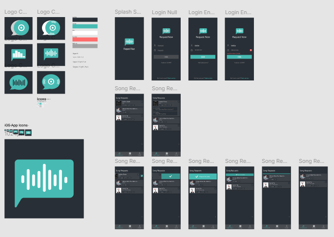
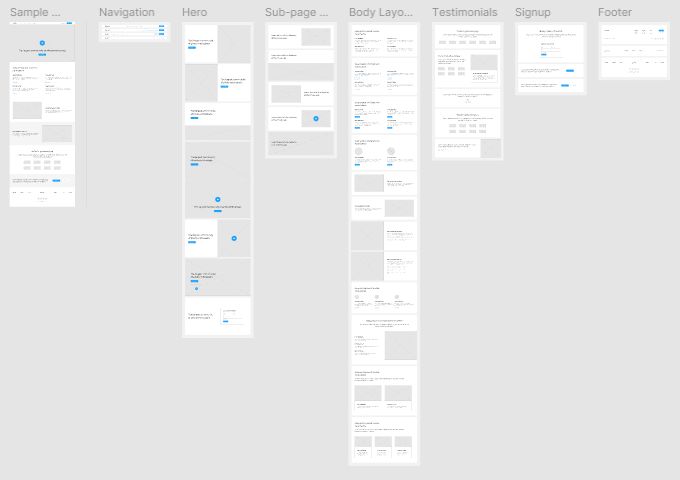
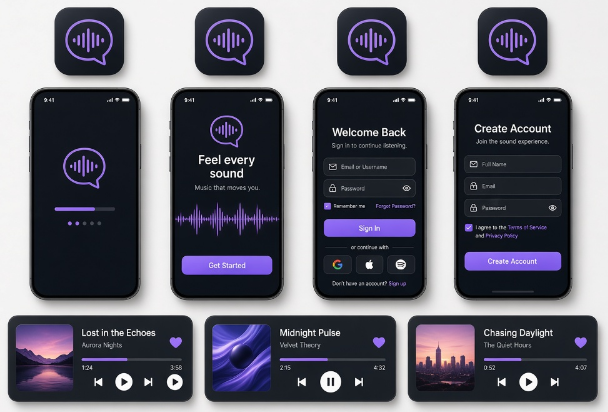
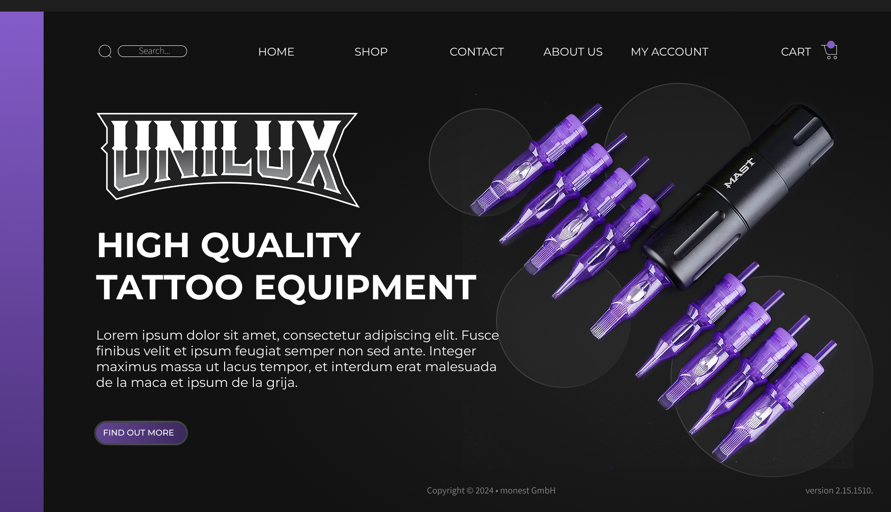
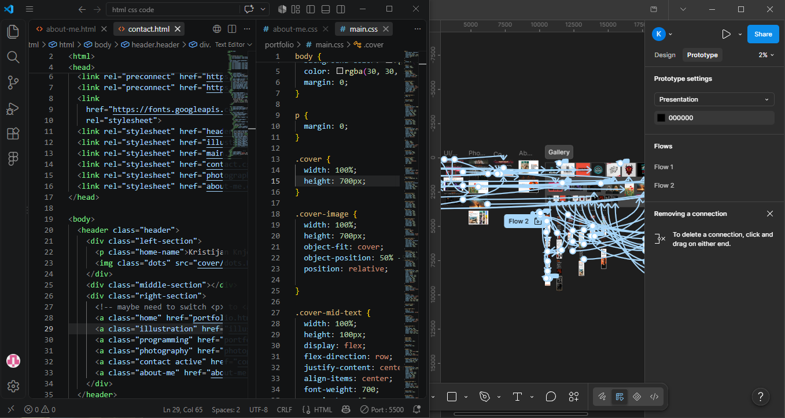

SHOWCASE UI/UX
Logo & Visual Art
User Interface and User Experience design is where creativity meets functionality, transforming ideas into clear, engaging, and intuitive digital experiences.
I focus on creating visually consistent interfaces while considering how users interact with them, ensuring that every element serves a clear purpose and contributes to a smooth overall experience.
Through thoughtful layouts, intuitive navigation, meaningful interactions, and modern design systems, I aim to balance aesthetics with usability. I pay close attention to typography, spacing, colors, hierarchy, and user flow to create interfaces that are not only visually appealing but also easy and enjoyable to navigate.
From the initial concept and wireframes to the final interface and interactive prototype, I strive to create digital experiences that feel both purposeful and polished.




SHOWCASE WEBSITE DESIGN
Website Design
Website design combines visual storytelling, user experience, and functionality to create engaging digital platforms. I focus on designing responsive and intuitive websites with clear structures, modern aesthetics, and thoughtful user journeys that guide visitors naturally through the content. By balancing creativity with usability, I aim to create websites that not only look professional but also provide meaningful and enjoyable experiences for users.

SHOWCASE FRONT-END
From Design To Function
What I enjoy most is taking an idea and turning it into a fully functional website through code. While Figma is useful for planning layouts, interfaces, and visual concepts, I personally prefer working directly with HTML, CSS, and JavaScript. There's something much more satisfying about building the structure, styling every element, and seeing the website come together through code.
Transferring a design from Figma to HTML is relatively straightforward, and Figma is especially useful when deadlines or time constraints require a faster workflow. However, when I have complete creative freedom, I prefer to build things manually from the ground up, because it gives me more control and makes the development process much more enjoyable.
For me, the best part is seeing an idea evolve from a concept into something interactive, responsive, and actually usable.
